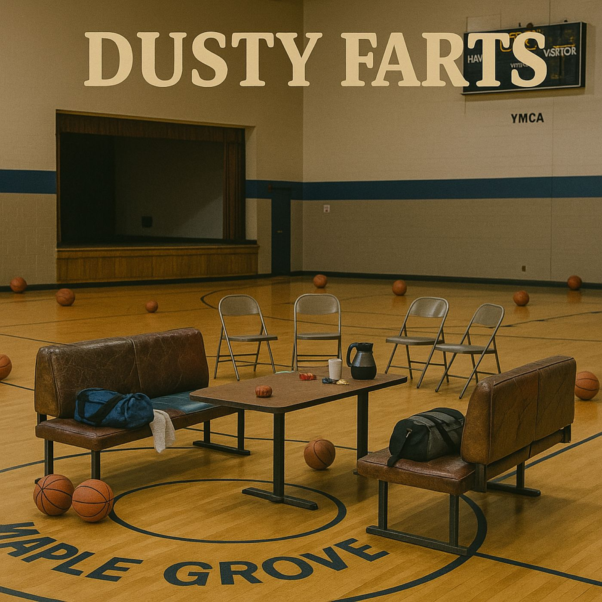

Episode 9: Freudean Fouls

Download MP3 (20 MB)
Chapters
Summary
The local YMCA transforms into an impromptu therapy hall when John (Dusty) and Fred (Farts) wander into the wrong “Circle of Veteran Brothers.” Instead of war stories, they get ink blots, notepads full of doodles, and the questionable wisdom of Dr. Fritz, a man who confuses therapy with interpretive sketching.
Between misread squirrels, casserole visions, and Aria’s sharp tongue, the booth becomes ground zero for psychoanalysis no one asked for. Hope narrates the chaos, while Gigi tries to teach the kids an “R” word that feels uncomfortably at home among midlife crises. By the end, our heroes prove once again that their subconscious is best left unexamined, and that friendship can survive even the strangest of group sessions.
Voices You’ll Hear
- John (Dusty) – ever-suspicious, convinced squirrels are plotting against him
- Fred (Farts) – casserole visionary, skeptical of Freud but not of snacks
- Aria – waitress, master of sass, and unamused witness to amateur psychology
- Dr. Fritz – doodle-happy therapist who mistakes sarcasm for progress
- Gigi – teacher of the “R” word, corralling kids and coots alike
- Hope – narrator, bemused chronicler of subconscious slip-ups
Transcript
Title
[Jingle 5]
[Harmonica wipe]
[Door]
John: Farts, my man. … This place better have coffee. … You know my day don’t start ‘til I can complain about it over a cup.
Fred: Don’t worry, Dusty. … This place has both coffee ‘and’ cookies. … One-half of the whole food pyramid.
John: Free coffee? … Sounds like a fair price of admission…. C’mon, I see signed of civilization at the far end of the gym.
Dr. Fritz: Ahh, hello, gentlemen. Welcome to the circle. You are both most welcome. Most welcome indeed.
John: Hey buddy, is this where all you “vermin huggers” like to meet?
Dr. Fritz: Vermin… huggers? I beg your pardon?
John: Yes, sir. Vermin. Huggers…. I sure did say it. And I’ve got a bone to pick with the lot of you. Did you know there’s a literal army of squirrels setting up camp in the middle of Maple Grove Park? Tents, latrines, mess hall, the whole nine yards.
Dr. Fritz: Fascinating… truly fascinating. But regrettably, not relevant to this gathering. This is most definitely not the Circle of Vermin Huggers.
Opening
Fred: See?! I told you, Dusty. Ain’t no group for that. … Huggin’ vermin? That’s whackier than you ordering decaf.
Dr. Fritz: …Yes, well, quite.
Fred: I told you. This here is clearly the Circle of Squirrel Lovers. That’s why I brought Snausages for everyone. Gourmet diplomacy, right here in my pockets.
Dr. Fritz: I see. … a pair of men who think phonics is a foreign policy. … But as the sign here plainly states, this is the Circle of Veteran Brothers.
John: Veteran Brothers, you say? Well now, that explains a lot. I could’ve sworn that sign read Vermin Huggers. … I was about to come in here and file a formal complaint… or maybe just bring a flamethrower.
Dr. Fritz: No, no, not vermin. Veterans. … I simply assumed, based on your age, posture, and general aura of irritation, that you two grumpy coots were honorable servicemen.
Fred: Unfortunately, no. , Dusty here got rejected on account of his peepers bein’ crooked as a raccoon’s poker hand… and as for me, I had a passel of young’uns before I could shave regular. Uncle Sam took one look and said, ‘Nope. That man’s already deployed in the war of diapers.
Dr. Fritz: Yes, yes… crooked eyes and diaper duty. Remarkable military records, both of you. Truly, the nation salutes your… unconventional service. Serving Coffee
Hope: And with that, Fritz poured them both a cup of coffee — free, because no one in Maple Grove has ever paid willingly for YMCA brew. The cookies, however, came with a warning label: may contain crumbs sharp enough to rupture fillings.
[SFX: coffee pours, cup clinks. Fred chomps a cookie.]
Fred: Mercy, Dusty… these things got edges. I think I just cut a groove in my molars.
John: Consider it dental work on the house. Next one’s free root canal with purchase of three cookies. The YMCA Benches
Hope: Of course, coffee and cookies meant commitment. … If they were staying, they needed a place to sit. Which, in the theology of John and Fred, meant only one thing.
Fred: A Booth.
John: A booth.
Hope: But booths are not a high value target when foraging at the local YMCA. … so John and Fred had to improvise.
[benches being drug]
John: Booth’s a booth, Farts. Doesn’t matter if it’s porcelain, vinyl, or splinters in yer biscuits.
Fred: Agreed. … Rearrange a couple of those gym bags into arm rests, and set a couple of basketballs down there together as a nice little foot stool.
[door creaking]
[table rattle]
John: Character? Mine wobbles like my knees on a cold morning. Any more of this, and I’ll be sittin’ closer to the floor than the cheer squad mats.
Fred: Barn-door creak beats wobbly knees every time. A booth’s supposed to stand firm, not do the cha-cha under your backside.
John: Firm? Ha! You sound like Curtis, braggin’ about his Sharpie tags last week. Remember that? Scribblin’ on the Jiffy booth like he’s king of vinyl real estate. Well, today this whole center court is our booth. Booth territory, Farts.
A Booth Declaration
Fred: Not sayin’ it’s genius, but it sure ain’t dumb And I say both wobbly and banshee benches count.
Hope: Now, I hate to be the one to slap guard rails on this little shindig, but seriously, fellas. … aren’t we stretchin’ this whole ‘booth’ idea a little far? … I mean, bleachers and benches don’t magically become booths just ‘cause you declare ‘em so. Shouldn’t we get some sort of official ruling on this? Otherwise, half the town gym is about to end up annexed under the Dusty Farts Booth Empire.
[Referee Booth runs up]
Clifford: The ruling on the floor is this: the entire center-court circle has been claimed as booth territory by the visiting squad… Team Dusty Farts!
Hope: Clifford Booth — referee here at the YMCA. He’s also the proud nephew of Clarence Booth, who bequeathed Booth’s Booth to the city park upon his passing. By Maple Grove city charter, 1841 edition, Clifford is fully authorized by hereditary rights to make final decisions on all matters of booth territory, annexation rights, and general booth-worthiness within city limits.
Clifford: According to Rule 12, Section C, Subparagraph… uh… well crap … never mind. … I will need further consultation with the replay officials.
[Clifford runs off]
Hope: Unfortunately, Clifford’s idea of ‘replay officials’ is just a pair of troublemaking teenagers he locked in the security closet, tasked with monitoring the gym’s lone security camera. … Technically, you’d get sharper replay angles from a 1980s game of Pong. … Not that it matters though, as mice chewed clean through the video cable last October. Meet Doctor Fritz
Fred: Well now, first time I ever been whistled for squatters’ rights in the middle of a gym. … Hey there, fella, you’re sayin’ this is the Circle of Veteran Brothers? I’m guessin’ you must be the therapist.
Dr. Fritz: Ah — yes, yes. Good gentlemen. Welcome. We meet regularly with veterans to help them work through their problems. … And, if you will allow me, I’m quite certain I can pinpoint your troubles as well.
John: Pinpoint away. Who says we even have a problem?
Dr. Fritz: Well, you’re here, aren’t you? That qualifies on the intake form. … It’s either that or I break out my Tarot cards and my All-Seeing Eye. … Which, by the way, Tarot reading is five dollars. … but I’ll light a candle … and all aromas are free.
Fred: Huh. That’s cheaper than Doctor Bobby’s offerings. … And smells better too.
John: Fine. Read my psyche, not my future. … It’s the cheaper option.
Dr. Fritz: Excellent. Please, take a seat. And gentlemen — speak freely. Or at least loudly; I find volume helps the unconscious feel noticed.
[John and Fred sit]
Dr. Fritz: Excellent. Now, please… calm your mind. … Clear your thoughts. Empty them like Bob’s tip jar. … Go to that deep, happy place. … You smell coffee… you smell cookies…
[SFX: soft, sudden snore]
Fred: Jumpin’ Jehosaphat! … Dang, there, fella—you put Dusty right out. … Please, tell us how you did that. The Enquirer wants to know.
Dr. Fritz: Well, you see… it is all in the mind. The deep expanses of the psyche. … Here—let’s share some coffee, and I’ll explain.
[SFX: pour, cup clinks]
John: Coffee? I’m up!
Fred: Now settle down, Dusty. We don’t have any data on this brew. It hasn’t been sent through a thorough C.A.F.E. assessment. Best tread carefully until we have the full rumble numbers.
John: After a week of sample-cup brew, sawdust coffee, and dog treats, I’m willin’ to take the risk. Thank you, good sir. The Drawings
Dr. Fritz: You are most welcome. Now, please. Gentlemen, … Settle in and get comfortable. I shall draw you a picture. … And you shall tell me what you see.
[SFX: pencil scribbling]
John: Well, obviously. That’s the exact battle plan the squirrels been usin’ to flank me at Maple Grove Park. … See the squiggly lines and acorn markers? ? That’s a full nut frontal flanking maneuver.
Dr. Fritz: How interesting. … Full frontal assault? How very interesting. … And you, sir, what do you see in this drawing?
Fred: Well, pickle my Pyrex if that ain’t my momma’s green-bean casserole. … Those squiggly lines? That’s just the steam risin’ off the dish. … And them circles? Why, that’s the mushroom soup bubbles, poppin’ right before the fried onions go on top.
Dr. Fritz: Green bean casserole and nut flanking maneuvers… how very interesting, indeed. Gentlemen, if I may… what you think are rodents and recipes are, in truth, echoes of memory. … The casserole is no mere dish — it is the ghost of the family table, bubbling with the comfort of a mother’s hand that is now absent. And the squirrel maneuvers? Not strategy at all, but the restless energy of boys who lacked that same maternal anchor. … …In psychoanalytic terms, we call this maternal displacement of appetite, where one man mistakes mushrooms for memories and the other mistakes squirrels for surrogate siblings. It is, to put it mildly, the casserole of the psyche…
[Whistle blast. Clifford charges back in.]
Clifford: 24-second clock violation on you Doctor. … Your diagnosis went over 24 seconds without direction or hypothesis.
Dr. Fritz: I see. … Very well. In short. … It is always the mother, gentlemen, always the mother.
John: That is, as you like to say, very interesting.
You See What?
Fred: Yeah, you must be a doctor type or something. What did you say your name was?
Dr. Fritz: Yes, I am. … Some know me as Doctor Fritz.
Hope: Meet Doctor Fritz, group moderator for The Circle of Veteran Brothers and, tragically, the only mental health professional in town. He loves nothing more than the sound of his own voice, and judging by the volume, so does he.
John: I’ll wager you that this Dr. Fritz could talk a squirrel right out of its own nuts.
Fred: That … Or right into a casserole, dependin’ on the day.
Hope: In post graduate school, Dr. Fritz half-mockingly, half-reverentially earned the knickname Dr. Freudy from his classmates. Not for brilliance, mind you, but for his unshakable conviction that every problem, from bunions to bad coffee, could be traced directly back to your mother. And considering what else goes on around here, it is not surprising at all that Dr. Fritz has embraced the Doctor Freudy label with a pride so thick Fred could slather it on toast and still have leftovers.
John: I’m sorry, Doctor, I didn’t catch your last name.
Dr. Fritz: It’s Enslip. … I am Doctor Freudy… Enslip.
Fred: Well. … ain’t that the mother lode. But hey, speaking of slip, sorry their fellas. … I had some of Bob’s chili yesterday and just had a little rumpus release.
[Cliff blows whistle]
Clifford: Flagrant Foul. Fred. … Backcourt violation! … Excessive force during flatulent blowout. Curtis shows up
[Curtis runs up]
John: Uh Oh.
Fred: Hide anything edible.
Curtis: Hey you! commode kings! Want me to decorate your new booth with my tags?... No? Fine. I’ll save my art for true aficionados. … Hey, is this The Circle of Venmo Buddies?
John: Well, Hi Curtis.
Fred: No, Curtis, this is not ‘The Circle of Venmo Buddies.
Curtis: Oh. That stinks. I was low on gas and I needed to get some fast cash. Whoa! Look at that guy! Is this therapy or the casting call for Colonel Mustard
Dr. Fritz: Curtis, you say. How interesting. … I am Dr. Freudy. You sound very young for a man who looks so old. How very interesting. Would you mind telling the group a little more about yourself?
Curtis: Well, I live with my mother in the basement of her trailer. It didn’t used to have a basement until she let me dig one. … Mom pretty much does everything for me, but she won’t let me backpack across Europe this summer. Oh, and I like cake. No, I mean, I really like cake.
An Old Friend Stops By
[Clifford whistle]
Clifford: Travelling violation. Curtis. You can’t claim world traveling status while living in your mother’s basement.
Dr. Fritz: Frear not, young … man-child. … We shall diagnose the problem. Here, what do you see in this drawing?
[Pencil scribbles]
Curtis: Oh. That’s easy. That’s birthday cake — and every day should be my birthday. I told you. I really like cake. You so dumb!
Dr. Fritz: I see. Well then… based on your confection-centric analysis, we encounter what we in the clinical arts call celebratory displacement. The cake is not merely dessert; it is a postponed parade, a candlelit contract with affirmation. Observe the layers: sponge, frosting, frosting, sponge — a stacked ledger of unmet expectations. And who, pray tell, controls the calendar of celebration? Not the mother, no—this is clearly the work of the father, the patriarchal gatekeeper of parties, the umpire of candles, the withholder of slices! I submit to you, that it is the father who must be held responsible.
[Clifford whistle]
Clifford: Substitution violation. Dr. Freudy. You have clearly misplaced the gender in your diagnosis. Everybody knows it is always the mother.
Curtis: Ok, well, I see an empty field outside the window that looks more fun. … Later weirdos.
[Curtis runs off]
Hope: And just like that, the circle was down a Curtis and up a silence. But silence never lasts long Maple Grove therapy groups attract chaos like moths to neon.
[Dr. Bobby runs up]
Dr. Bobby: Comrades! Hello! It is good to see Booth Brothers. But I am confused.
John: Gee, Doctor Bobby. … Aren’t we all …
Dr. Bobby: I don’t see the widows. Where are the widows?
Fred: Hello, Doctor Bobby. Nice to see you. Umm, Is something wrong with your eyes too? You can’t see the windows right over there?
John: Yeah, Doc. Even I can see the windows over there. … I see your big red blood bus parked out front.
Dr. Bobby: No, Widows…. Free Agents on Eastern European market. Isn’t this The Circle of Venetian Mothers? ... I assumed this was a group for gondola widows.... This make me sad. I brought wine!
Dr. Fritz: How interesting. No, this is the Circle for Veteran Brothers, although at this point it should be called the Circle of Confused Strangers. I am Dr. Freudy. And you are most welcome.
Doctor Bobby adds clarity?
Dr. Bobby: Ah, a fellow doctor. …do you also make wine in your bathtub?
[Clifford blows whistle]
Clifford: Double Dribble on Doctor Bobby. … You left a trail of blood drips and, well, a second unknown substance, when you ran in from the blood bus.
Dr. Fritz: Well. Fortunately, I think it is safe to assume at this point that the other substance is innocuous wine.
John: Innocuous swine? … Gosh no, Doc! Every hog I’ve ever known is as suspicious as a squirrel.
[Aria walks up]
Aria: Lord help us all. … I can see I’ve stumbled upon a scene of mass confusion. … Which, is About normal for around here.
John: Oh, Hi Aria.
Aria: Punkin Bread. White Bread and Pickle Loaf. … This is quite the breadbasket of buttered-up buffoons.
Fred: Hey there, Aria. What’s shakin’ there sista? You down here to hug vermin, love squirrels or romance canoe ladies?
Aria: Well, actually. … I’m about as confused as the lot of ya. … I thought this was The Circle of Vegan Burgers. I brought shakes, fries and Impossible Whoppers.
Dr. Fritz: How interesting. … And as we are close to the end of our group hour … very appropriate timing. But before we close, would you please take a look at this drawing. … And tell me what you see?
[pencil scribbling]
Aria: Well Doc. I’d love to. … If you’d show me your drawing. But What you got there is your doodles from today’s session. … Hey, lookit that water slide. Good job! You been thinkin' of building your own water park for a while?
Dr. Fritz: Why yes. And I shall call it Enslip and Enslide World.
[Cliff blows whistle]
Clifford: Goal tending. Doctor Freudy. Unauthorized future amusement park planning with solid financial plan.
Fred: Speaking of future planning, Dusty, you up for some lunch?
John: Sure, Fred. Let’s get on up outta here.
Aria: Don’t worry fellas, I brought enough for everyone. It’s like my friend Jimmy says, breaking bread together is the oldest language of love and friendship we have. … Just don’t tell Bob
[paper bags being opened]
John: Aria to the rescue, just like always
Fred: Boy, I’ll tell you what. This here food looks so good, I think I’ll be back here next week for a relapse.
Gigi: Relapse? Did someone say Relapse? Hey kids! That’s today’s special R word. Can you say relapse with me? Relapse! Relapse!
Fred: Relapse. R.E.,L.A.P.s. Relapse. That’s when your belt gives up after Thanksgiving and you gotta switch back to sweat pants. Relapse
[sounds of eating and slurping]
John: Good Food.
Fred: Even better company.
Hope: Sometimes, the finest therapy isn’t found in couches or clipboards, but in coffee, crumbs, and company. An impromptu meal, with A circle of friends, mismatched as they are, can turn even squirrel wars and casserole confessions into a kind of healing. And that, folks, is sometimes enough.